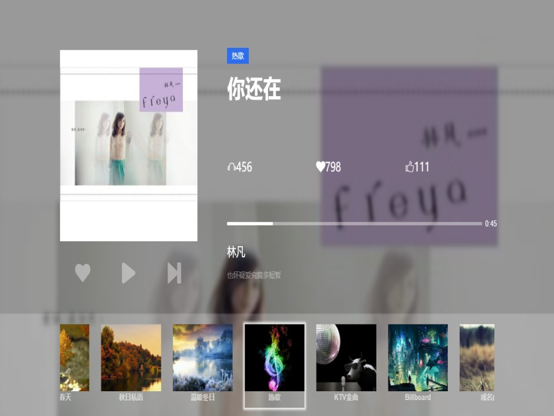
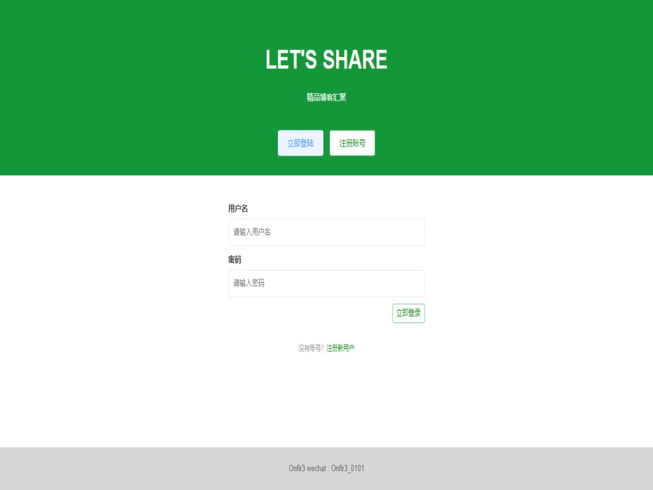
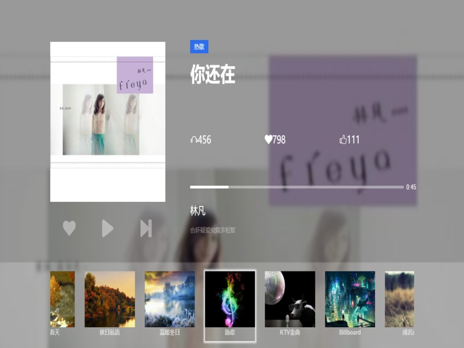
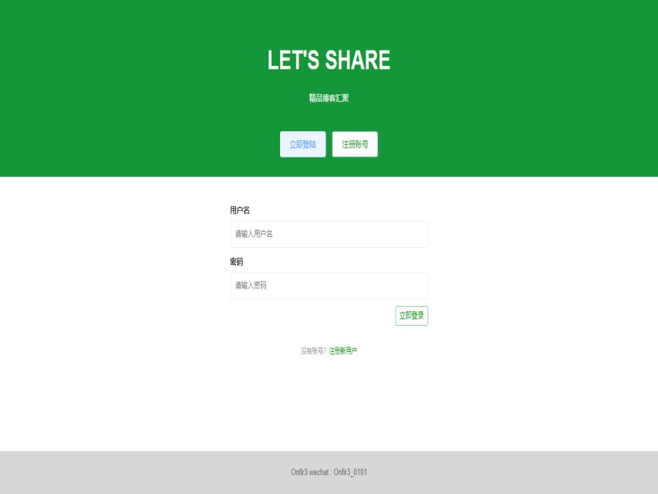

Hello
文登
学习前端中
- 年龄
- 18
- 所在城市
- 北京
- 邮箱
- w526529650@outlook.com
- 手机
- 18722427710

学习前端中
我叫文登。


 



描述:
用CSS构建出一个键盘的样式，并且对应的每个按键都可编辑对应的网站，同时抓取对应网站的favicon展示在相应的键位上，编辑完成后，可以通过敲击键盘对应键位进行页面访问。
描述:
使用纯原生 JS 开发，主要利用 HTML 5 的 Canvas API ，是我学习原生 JS 及 Canvas 过程中所开发的小工具。 其提供在 PC 及手机端在线画画、橡皮擦、画笔调色、画作删除等功能，并支持画作下载。
描述:
小作品，使用jQuery实现了苹果早期风格的轮播效果。
描述:
使用原生 js 实现的一个自适应屏幕的音乐播放器，主要利用html5的Audo API的使用，在实现过程中深化了我对组件化思路，Ajax以及跨域的运用。
描述:
该项目使用 Vue 实现了一个在线博客分享的平台。包含首页、用户文章列表、个人管理等页面，实现了登录、注册、编辑、发布等功能。项目使用 Grid 作页面布局，以 Vue CLI 为基础创建项目模版，使用 Less 作 CSS 预处理，引用 Element UI 作交互。通过 Vue Router 实现路由的跳转、异步加载、权限验证等，通过 vuex 实现状态管理，用 Axios 获取数据，并对接口进行了封装。
技术栈：
Vue CLI/ Vue2/ Axios/ Vue Router/ Vuex/ ES6/ Npm/ Grid/ Less